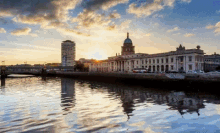

---
TRAVEL
Yellowstone

Geographical Location: North America
Yellowstone is the first national park in the United States. It covers over 2.2 million acres, and provides an opportunity to see wildlife and explore geothermal areas. In fact, Yellowstone contains about half the world's active geysers.
These unique opportunities also bring out a lot of bad decisions among the tourists. Every year visitors injure themselves or the wildlife by getting close to the animals. You can see examples of people making bad decisions by visiting Yellowstone National Park: Invasion of the Idiots, Tourons of Yellowstone, or Cowboy State Daily.Photo Gallery


Singapore

Geographical Location: South East Asia
Singapore is a country located in South East Asia, and it lies on the equator. Despite the fact that Singapore is only 281.3 square miles and has a population of approximately 5.54 million, it has a thriving economy and is a strong player in the global market. Singapore is famous for its city skyline, with a few landmarks such as the Marina Bay Sands Resort, Raffles Hotel, and the Esplanade. Additionally, Singapore has the highest rated airport in the world, with Changi Airport featuring many retail and dining options.
Photo Gallery


Barcelona, Spain

Geographical Location: Europe
Barcelona is located on the northeastern coast of Spain and is the capital of Catalonia. Barcelona is home to 1.6 million people and contains multiple different historical landmarks and interesting architecture.
Barcelona is famous for its notable architects including Antoni Gaudí and Lluís Domènech i Montaner. These architects built La Sagrada Familia, Park Guell, and Palau de la Música Catalana which are among the most famous constructions in Barcelona. Both architects are famous for their Modernisme style buildings notable for their distinct colors and organic shapes.Photo Gallery


Seoul, South Korea

Geographical Location: Asia
Seoul is the capital of South Korea and it is a city enshrined in history. The Han river runs through Seoul, dividing it into two parts. Additionally, there are many mountains in and around Seoul, making it so the city has a lot of hills. Seoul is the perfect blend of modern and historical with five royal palaces and several shrines. Additionally, there are plenty of fun shopping areas in Seoul such as Hongdae, Insadong, and Gangam. Lastly, Seoul is a city of cafes with one on almost every block and several fun cafe experiences to try out, especially in Yeonnam.
Photo Gallery


Dublin, Ireland
Geographical Location: Europe
Dublin City is the capital city of the Republic of Ireland and is located in the east of Ireland. Dublin was originally a Viking settlement called Dubh Linn which translates to black pool. Dublin has always been a historically significant city in Irish history, from being the main city from which the British ruled over Ireland for 800 years to then being the setting of the 1916 Easter Rising and Irish War of Independence.
Today Dublin is a developed city boasting one of the strongest tech sectors in Europe and a booming tourism industry. Dublin is renowned for its sites such as the GPO, Croke Park, O'Connell Street, Temple Bar and Saint James Gate, which is where Guinness is brewed. Dublin is also surrounded by great coastal towns such as Dun Laoghaire, Howth and Skerries.
Photo Gallery